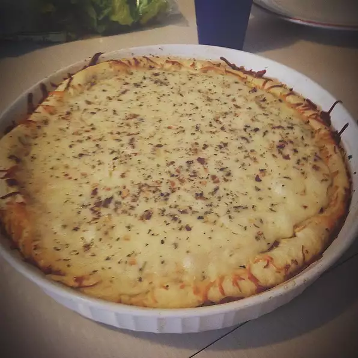

Gourmet White Pizza

Description
Yummy! This is a wonderful pizza for those who are looking to get away from the basic, cheese and pepperoni pizza.
Just have the ingredients listed below then follow the steps to make your own!
For 4 servings:
Ingredients
- 2 tablespoons butter, melted
- 1 tablespoon olive oil
- 3 tablespoons minced garlic
- 2 tablespoons sun-dried tomato pesto
- 1 teaspoon dried basil
- 1 teaspoon dried oregano
- 1 tablespoon grated Parmesan cheese
- 1 cup Alfredo sauce
- 2 cups chopped cooked chicken breast meat
- 1 (12 inch) pre-baked pizza crust
- 1 medium tomato, sliced
- 1 (4 ounce) package feta cheese
Steps
- Preheat the oven to 375 degrees F (190 degrees C).
- In a small bowl, mix together the butter, olive oil, garlic, pesto, basil, oregano, Parmesan cheese and Alfredo sauce. Arrange the chicken on top of the pizza crust. Pour the Alfredo sauce mixture evenly over the chicken. Top with tomato and feta cheese.
- Bake for 10 to 15 minutes in the preheated oven, until the crust is lightly browned and toppings are toasted. Cut into wedges to serve.
Navigation Menu